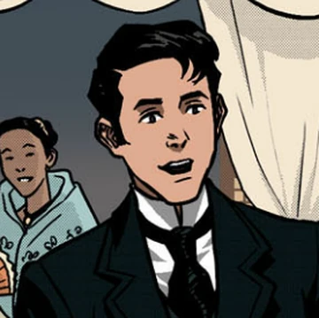
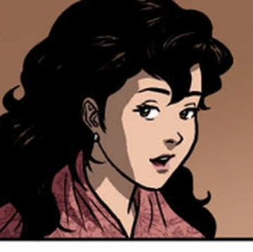

| CHARACTERS IN NOLI ME TANGERE |
|---|
|  | Juan Crisostomo Ibarra y Magsalin (Crisostomo Ibarra) |
- Main Character of Noli Me Tangere.
- He is a young mestizo, whom descended from a Spanish man, who has returned to the Philippines after years of studying.
- He's idealistic, respectable, and smart.
|
|  | Maria Clara |
- She is Crisostomo Ibarra's love interest.
- Father Damaso is her godfather and Captain Tiago's daughter, however she is actually Father Damaso's child because he was in an affair with Captain Tiago's wife.
|
 | Padre Damaso |
- Father Damaso is a corrupt priest in the Catholic Church.
- He is the main antagonist in Noli Me Tangere, and he has a lot of predjudices
- He also uses his influence and he abuses his power to the people who've proved him wrong.
|
 | Padre Salvi |
- Padre Salvi is a Spanish friar, he arrived in the Philippines to be in the Catholic Church of the Philippines
- He is usually compared to Padre Damaso, but he is a little bit kinder than Padre Damaso
|